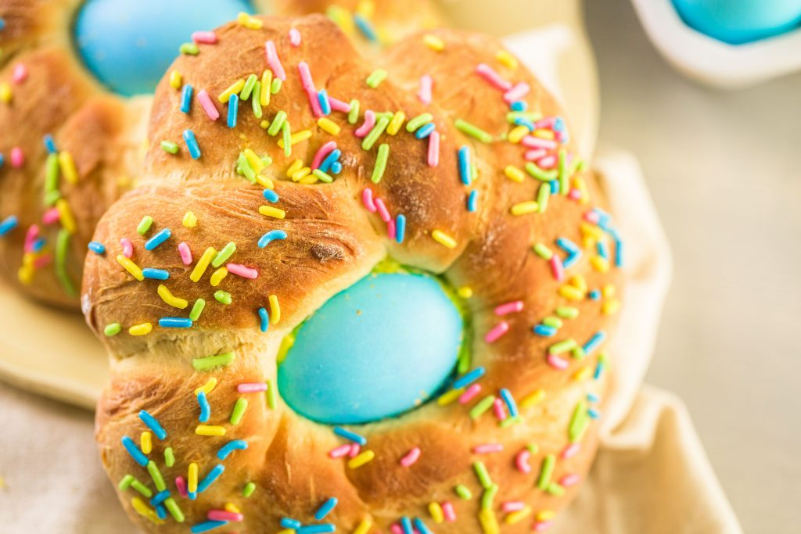
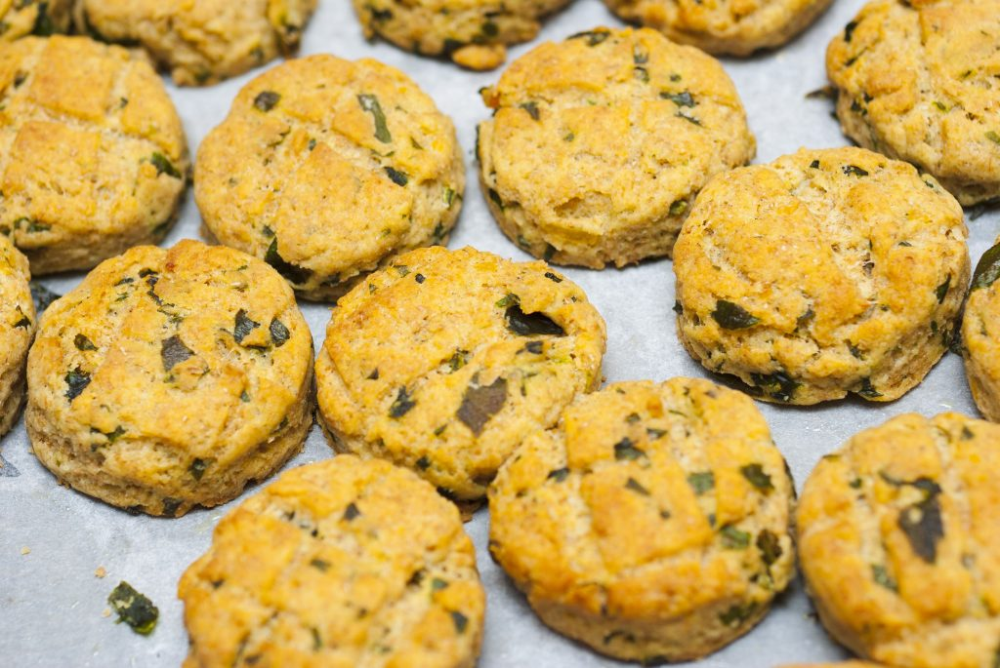
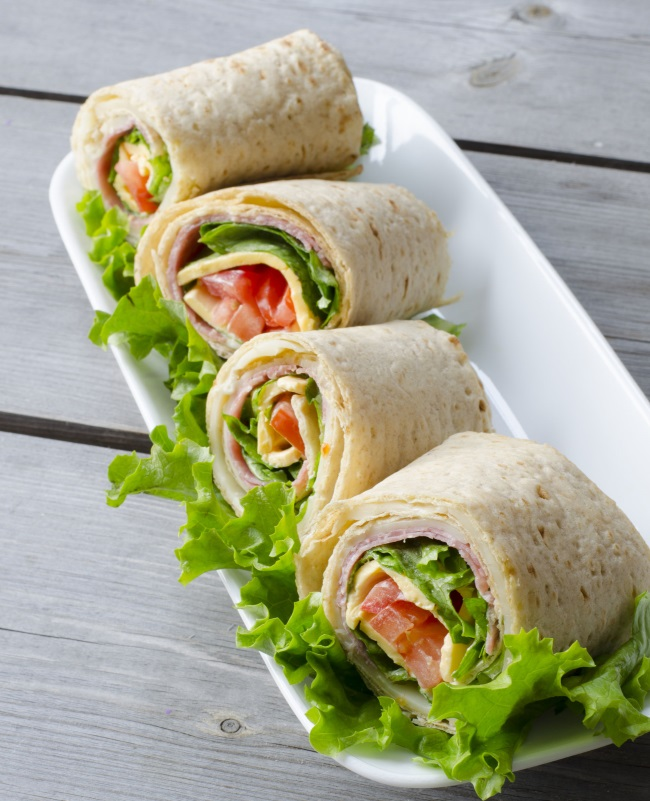

Ingrediente:
- 650 g faina
- 115 g unt
- 3 oua
- 140 g zahar
- 120 ml lapte
- 120 ml apa
- 1 pliculet drojdie
- esenta vanilie
- coaja unei portocale
- un praf sare
Pentru copt si decor:
- 1 ou
- 1 lingura lapte
- oua fierte tare, vopsite (optional)
- ornament colorat pentru deserturi
Colac italian impletit

- Dizolva drojdia uscata in apa calda, cu o lingurita de zahar. Topeste laptele cu untul la microunde sau pe foc.
- Intr-un recipient incapator (bolul robotului de bucatarie, daca ai unul) bate ouale si zaharul, adauga laptele cu untul, drojdia dizolvata si mirodeniile. Adauga faina si praful de sare si mixeaza cca 10 minute, pana obtii un aluat uniform si fin, dar inca lipicios.
- Pune coca pe blatul bine infainat si framanta-l 1-2 minute, pana ce ii poti da o forma rotunjita fara sa se mai lipeasca. Pune aluatul intr-un castron uns cu ulei si unge-l si deasupra, incat sa nu se intareasca. Acopera castronul cu un prosop de bucatarie sau folie de plastic si da-l sa creasca la cald pentru 90-120 minute.
- Odata crescut, rastoarna aluatul pe blatul presarat cu faina si da-i o forma usor alungita. Taie-l in 4 bucati egale si intinde fiecare bucata rezultata cu palmele, alungind-o pana la cca 60 cm. Impleteste cate 2 fasii de aluat intre ele.
- Asaza cei doi colaci obtinuti pe cate o hartie de copt, strecoara ouale fierte si vopsite prin impletitura, unge-i cu oul batut cu laptele si presara-i cu decorul colorat. Lasa colacii sa creasca pentru inca o ora, apoi da-i la cuptor pentru 30-40 de minute, sau pana sunt bine rumeniti.
Ingrediente:
- 500 g faina
- 120 g unt
- 1 lingurita praf de copt
- 1/2 lingurita bicarbonat de sodiu
- 150 g cascaval ras
- 80 g leurda
- 250 ml lapte
- 2 oua
- sare
- piper
Briose englezesti cu leurda

- Amesteca faina cu praful de copt si bicarbonatul de sodiu. Incorporeaza untul rece in faina, cu degetele, pana cand compozitia capata aspect de firimituri
- Adauga cascavalul si leurda tocata marunt (fara codite). Separat, bate ouale cu laptele, sare si piper.
- Formeaza o gaura in centrul vasului cu faina si toarna ingredientele lichide treptat (pastreaza 1-2 linguri de lapte cu ou, pentru uns).
- Presara bine cu faina blatul de lucru si intinde aluatul intr-o foaie groasa, de cca 2-3 cm. Decupeaza cercuri cu o forma de prajituri si da-le deoparte. Regrupeaza aluatul ramas pe margini, intinde-l iar si decupeaza-l, repetand procedeul pana cand termini aluatul.
- Pune briosele in tava tapetata cu foaie de copt, unge-le cu laptele pastrat, presara putin cascaval ras deasupra fiecareia si da-le la cuptor pentru 15-18 minute la 200 grade, sau pana se rumenesc.
- Serveste briosele englezesti cu leurda ca o gustare aperitiv sau la micul dejun, unse cu unt.
Ingrediente:
- 3 linguri ardei gras tocat
- 1 lingura ulei de masline
- 3 oua
- 1 lingura apa
- 2 lipii (tortilla)
Burrito cu ardei gras si ou

- Caleste ardeiul in ulei, apoi scoate-i si da-i deoparte.
- Bate ouale cu lingura de apa si gateste-le intr-o tigaie ca pe o clatita: lasa-le sa se faca pe o parte, apoi cu ajutorul unei spatule de lemn, intoarce ouale.
- Taie omleta rezultata pe jumatate si aseaza fiecare jumatate pe cate o lipie.
- Adauga ardeii in centrul lipiei si ruleaza. Taie burrito-ul in bucati de 3-4 cm latime si serveste-l.